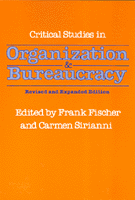

<body bgcolor="#FFFFFF" text="#000000" link="#0000FF" vlink="#CC0000" alink="#CC0000"><center><hr width="350" size="1" align="center" noshade>Approaches to organizational crises in the late twentieth century<hr width="350" size="1" align="center" noshade><p><a href="https://cdcshoppingcart.uchicago.edu/Cart/ChicagoBook.aspx?ISBN=9781566391214&&PRESS=temple" target="_top">Buy this book!</a> | <a href="https://cdcshoppingcart.uchicago.edu/Cart/Cart.aspx?PRESS=temple" target="_top">View Cart</a> | <a href="https://cdcshoppingcart.uchicago.edu/Cart/Cart.aspx?PRESS=temple" target="_top">Check Out</a></p><p></p></center><!--none//--><h1>Critical Studies in Organization and Bureaucracy</h1>
<H2>Revised and Expanded</H2>
<h3>edited by Frank Fischer and Carmen Sirianni</h3>
<P>cloth 1-56639-121-0 $74.50, Nov 93, <FONT COLOR=#990033>Out of Stock Unavailable</FONT>
<br>paper 1-56639-122-9 $47.95, Nov 93, <FONT COLOR=#990033>Available</FONT>
<BR> 704 pp
6x9
</P><BLOCKQUOTE><I>"This is an excellent collection that provides a welcome alternative to many of the traditional readers on organizations and bureaucracies.... A very useful contribution."</I>
<br>&#151<b>Paul DiMaggio</b>, Yale University<I></I></BLOCKQUOTE>
<p>Contemporary scholarship and classic essays focus on the continuing crises in bureaucratic organizations and managerial authority. Rethinking and innovation in private, public, and nonprofit organizations emerge from case studies on schools, multicultural and feminist organizations, private corporations, environmental planning and regulation, alternative services, and attempts to "reinvent government."
<BR>&nbsp;<h2>Excerpt</h2><P>Excerpt available at <a href="http://www.temple.edu/tempress">www.temple.edu/tempress</a></p>
<BR>&nbsp;<h2>Reviews</h2>
<p><I>"This group of essays provides a comprehensive overview for scholars and participants seeking to make organizations from humane and more effective."</I>
<br>&#151<b>Dudley Burton</b>, Brown University
<BR>&nbsp;<h2>Contents</h2><P>
<p>Preface to Revised Edition
<p><b>Part I: Classical Problems and Perspectives</b>
<br>1. Bureaucracy &#150 Max Weber
<br>2. The Spirit of Bureaucracy and Beyond Bureaucracy &#150 Karl Marx
<br>3. Oligarchy &#150 Robert Michels
<br>4. Scientific Management &#150 Frederick W. Taylor
<br>5. The Real Meaning of Taylorism &#150 Harry Braverman
<br>6. Human Relations and Informal Organization &#150 Fritz J. Roethlisberger and William J. Dickson
<br>7. Three Patterns of Bureaucracy &#150 Alvin W. Gouldner
<p><b>Part II: Forms of Control and Divisions of Labor</b>
<br>8. Forms of Control in the Labor Process: An Historical Analysis &#150 Richard Edwards
<br>9. Machine Technology and Workplace Control: The U.S. Post Office &#150 Peter Rachleff
<br>10. Organizing Consent on the Shop Floor &#150 Michael Burawoy
<br>11. Women, Unions, and Participative Management &#150 Louise Lamphere and Guillermo Grenier
<br>12. Organizational Expertise and Bureaucratic Control: Behavioral Science Ideology &#150 Frank Fischer
<br>13. Reproducing Hierarchy: Job Evaluation and Comparable Worth in State Government &#150 Joan Acker
<br>14. Manufacturing Management Ideology: Corporative Culture and Control in Financial Services &#150 Vicki Smith
<p><b>Part III: Structure, Power, and Practices</b>
<br>15. The Rationing of Services in Street Level Bureaucracies &#150 Michael Lipsky
<br>16. Teaching in a Bureaucratic School &#150 Susan Moore Johnson
<br>17. Women and Power in Organizations &#150 Rosabeth Kanter
<br>18. Mentoring and Irrationality: The Role of Racial Taboos &#150 David A. Thomas
<br>19. Normal Accident at Three Mile Island &#150 Charles Perrow
<br>20. The Department of Defense and the Military-Industrial Establishment: The Politics of the Iron Triangle &#150 Gordon Adams
<br>21. Bureaucracy and the Regulation of Health and Safety at Work &#150 Steven Kelman
<br>22. Class and Politics in the Organization of Public Administration: The U.S. Department of Labor &#150 Nancy DiTomaso
<br>23. The AIDS Crisis and Organizational Failure &#150 Charles Perrow and Mauro F. Guillén
<p><b>Part IV: Organizational Alternatives and Social Change</b>
<br>24. The Collectivist Organization: An Alternative to Rational-Bureaucratic Models &#150 Joyce Rothschild
<br>25. Community-Owned Government: Empowering Rather than Serving &#150 David Osborne and Ted Gaebler
<br>26. The Algebra Project: Organizing in the Spirit of Ella &#150 Robert Moses, Mieko Kamii, Susan McAllister Swap, and Jeffrey Howard
<br>27. Worker Participation in Technological Change &#150 Robert Howard and Leslie Schneider
<br>28. Feminism and the Forms of Freedom &#150 Jane Mansbridge
<br>29. Learning Pluralism: Democracy and Diversity in Feminist Organizations &#150 Carmen Sirianni
<br>30. Internal Organization and Social Structure in Community Organizing: The Case of ACORN &#150 Gary Delgado
<br>31. Fishbowl Planning: Environmental Regulation, Economic Development, and Democratic Technique &#150 Daniel Mazmanian and Jeanne Nienaber
<br>32. Beyond NIMBY: Participator Approaches to Hazardous Waste Management in Canada and the United States &#150 Barry Rabe
<p>About the Editors
</P><BR>&nbsp;<H2>About the Author(s)</H2>
<P><b>Frank Fischer</b> teaches Political Science and Public Administration at Rutgers University and has published several books, including <I>Technocracy and the Politics of Expertise</I> and <I>The Argumentative Turn in Policy
Analysis and Planning</I>.</P>
<P><b>Carmen Sirianni</b> teaches Sociology at Brandeis University and is co-editor of the <i><a href="../labor_change.html" target="_top">Labor and Social Change</a></i> series at Temple University Press. His books include <I><a href="436_reg.html" target="_top">Worker Participation and the Politics of Reform</a></I> (Temple) and <I><a href="621_reg.html" target="_top">Working Time in Transition</a></I> (Temple).</P>
<P>Contributors: Joan Acker, Gordon Adams, Harry Braverman, Michael Burawoy, Gary Delgado, William J. Dickson, Nancy DiTomaso, Richard Edwards, Ted Gaebler, Alvin W. Gouldner, Guillermo Grenier, Mauro F. Guillén, Jeffrey Howard, Robert Howard, Susan Moore Johnson, Mieko Kamii, Rosabeth Kanter, Steven Kelman, Louise Lamphere, Michael Lipsky, Jane Mansbridge, Karl Marx, Daniel Mazmanian, Robert Michels, Robert Moses, Jeanne Nienaber, David Osborne, Charles Perrow, Barry Rabe, Peter Rachleff, Fritz J. Roethlisberger, Joyce Rothschild, Leslie Schneider, Vicki Smith, Susan McAllister Swap, Frederick W. Taylor, David A. Thomas, Max Weber, and the editors.</P>
<BR><H2>Subject Categories</H2>
<p><A HREF="/tempress/labor.html" TARGET="_top">Labor Studies and Work</a>
<BR><A HREF="/tempress/political.html" TARGET="_top">Political Science and Public Policy</a>
</p>
<p align="center"><a href="https://cdcshoppingcart.uchicago.edu/Cart/ChicagoBook.aspx?ISBN=9781566391214&&PRESS=temple" target="_top">Buy this book!</a> | <a href="https://cdcshoppingcart.uchicago.edu/Cart/Cart.aspx?PRESS=temple" target="_top">View Cart</a> | <a href="https://cdcshoppingcart.uchicago.edu/Cart/Cart.aspx?PRESS=temple" target="_top">Check Out</a></p><p><font face="Arial" size="1"><a href="copyright.html" onMouseOver="window.status='Web Copyright Policy';return true;" onMouseOut="window.status=''" title="Web Copyright Policy">&copy;</a> 2015 <a href="http://www.temple.edu" target="new" onMouseOver="window.status='Link to Temple University home page';return true;" onMouseOut="window.status=''" title="Link to Temple University home page">Temple University</a>. All Rights Reserved. http://www.temple.edu/tempress/titles/324_reg.html</font></p>